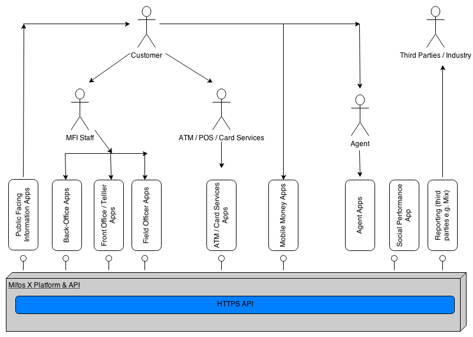
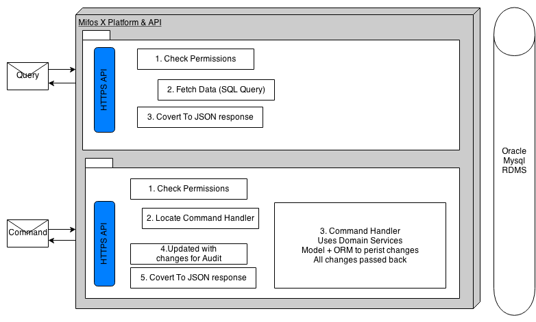

System Overview

Financial institutions deliver their services to customers through a variety of means today.
- Customers can call direct into branches (teller model)
- Customers can organise into groups (or centers) and agree to meetup at a location and time with FI staff (traditional microfinance).
- An FI might have a public facing information portal that customers can use for variety of reasons including account management (online banking).
- An FI might be integrated into a ATM/POS/Card services network that the customer can use.
- An FI might be integrated with a mobile money operator and support mobile money services for customer (present/future microfinance).
- An FI might use third party agents to sell on products/services from other banks/FIs.
As illustrated in the above diagram, the various stakeholders leverage business apps to perform specific customer or FI related actions. The functionality contained in these business apps can be bundled up and packaged in any way. In the diagram, several of the apps may be combined into one app or any one of the blocks representing an app could be further broken up as needed.
The platform is the core engine of the MIS. It hides alot of the complexity that exists in the business and technical domains needed for an MIS in FIs behind a relatively simple API. It is this API that frees up app developers to innovate and produce apps that can be as general or as bespoke as FIs need them to be.
Principals
RESTful API
The platform exposes all its functionality via a practically-RESTful API, that communicates using JSON.
We use the term practically-RESTful in order to make it clear we are not trying to be fully REST compliant but still maintain important RESTful attributes like:
-
Stateless: platform maintains no conversational or session-based state. The result of this is ability to scale horizontally with ease.
-
Resource-oriented: API is focussed around set of resources using HTTP vocabulary and conventions e.g GET, PUT, POST, DELETE, HTTP status codes. This results in a simple and consistent API for clients.
See online API Documentation for more detail.
Multi-tenanted
The mifos platform has been developed with support for multi-tenancy at the core of its design. This means that it is just as easy to use the platform for Software-as-a-Service (SaaS) type offerings as it is for local installations.
The platform uses an approach that isolates an FIs data per database/schema (See Separate Databases and Shared Database, Separate Schemas).
Extensible
Whilst each tenant will have a set of core tables, the platform tables can be extended in different ways for each tenant through the use of Data tables functionality.
Command Query Seperation
We seperate commands (that change data) from queries (that read data).
Why? There are numerous reasons for choosing this approach which at present is not an attempt at full blown CQRS. The main advantages at present are:
- State changing commands are persisted providing an audit of all state changes.
- Used to support a general approach to maker-checker.
- State changing commands use the Object-Oriented paradign (and hence ORM) whilst querys can stay in the data paradigm.
Maker-Checker
Also known as four-eyes principal. Enables apps to support a maker-checker style workflow process. Commands that pass validation will be persisted. Maker-checker can be enabled/disabled at fine-grained level for any state changing API.
Fine grained access control
A fine grained permission is associated with each API. Administrators have fine grained control over what roles or users have access to.
Design Overview
Note: The implementation of the platform code to process commands through handlers whilst supporting maker-checker and authorisation checks is a little bit convoluted at present and is an area pin-pointed for clean up to make it easier to on board new platform developers. In the mean time below content is used to explain its workings at present.

Taking into account example shown above for the users resource.
- Query: GET /users
- HTTPS API: retrieveAll method on org.mifosplatform.useradministration.api.UsersApiResource invoked
- UsersApiResource.retrieveAll: Check user has permission to access this resources data.
- UsersApiResource.retrieveAll: Use 'read service' to fetch all users data ('read services' execute simple SQL queries against Database using JDBC)
- UsersApiResource.retrieveAll: Data returned to coverted into JSON response
- Command: POST /users (Note: data passed in request body)
- HTTPS API: create method on org.mifosplatform.useradministration.api.UsersApiResource invoked
@POST
@Consumes({ MediaType.APPLICATION_JSON })
@Produces({ MediaType.APPLICATION_JSON })
public String create(final String apiRequestBodyAsJson) {
final CommandWrapper commandRequest = new CommandWrapperBuilder() //
.createUser() //
.withJson(apiRequestBodyAsJson) //
.build();
final CommandProcessingResult result = this.commandsSourceWritePlatformService.logCommandSource(commandRequest);
return this.toApiJsonSerializer.serialize(result);
}
Description: Create a CommandWrapper object that represents this create user command and JSON request body. Pass off responsiblity for processing to PortfolioCommandSourceWritePlatformService.logCommandSource.
@Override
public CommandProcessingResult logCommandSource(final CommandWrapper wrapper) {
boolean isApprovedByChecker = false;
// check if is update of own account details
if (wrapper.isUpdateOfOwnUserDetails(this.context.authenticatedUser().getId())) {
// then allow this operation to proceed.
// maker checker doesnt mean anything here.
isApprovedByChecker = true; // set to true in case permissions have
// been maker-checker enabled by
// accident.
} else {
// if not user changing their own details - check user has
// permission to perform specific task.
this.context.authenticatedUser().validateHasPermissionTo(wrapper.getTaskPermissionName());
}
validateIsUpdateAllowed();
final String json = wrapper.getJson();
CommandProcessingResult result = null;
try {
final JsonElement parsedCommand = this.fromApiJsonHelper.parse(json);
final JsonCommand command = JsonCommand.from(json, parsedCommand, this.fromApiJsonHelper, wrapper.getEntityName(),
wrapper.getEntityId(), wrapper.getSubentityId(), wrapper.getGroupId(), wrapper.getClientId(), wrapper.getLoanId(),
wrapper.getSavingsId(), wrapper.getCodeId(), wrapper.getSupportedEntityType(), wrapper.getSupportedEntityId(),
wrapper.getTransactionId(), wrapper.getHref(), wrapper.getProductId());
result = this.processAndLogCommandService.processAndLogCommand(wrapper, command, isApprovedByChecker);
} catch (final RollbackTransactionAsCommandIsNotApprovedByCheckerException e) {
result = this.processAndLogCommandService.logCommand(e.getCommandSourceResult());
}
return result;
}
Description: check user has permission for this action. if ok, a) parse the json request body, b) create a JsonCommand object to wrap the command details, c) use CommandProcessingService to handle command.
Note: if a RollbackTransactionAsCommandIsNotApprovedByCheckerException occurs at this point. The original transaction will of been aborted and we only log an entry for the command in the audit table setting its status as 'Pending'.
@Transactional
@Override
public CommandProcessingResult processAndLogCommand(final CommandWrapper wrapper, final JsonCommand command, final boolean isApprovedByChecker) {
final boolean rollbackTransaction = this.configurationDomainService.isMakerCheckerEnabledForTask(wrapper.taskPermissionName())
&& !isApprovedByChecker;
final NewCommandSourceHandler handler = findCommandHandler(wrapper);
final CommandProcessingResult result = handler.processCommand(command);
final AppUser maker = this.context.authenticatedUser();
CommandSource commandSourceResult = null;
if (command.commandId() != null) {
commandSourceResult = this.commandSourceRepository.findOne(command.commandId());
commandSourceResult.markAsChecked(maker, DateTime.now());
} else {
commandSourceResult = CommandSource.fullEntryFrom(wrapper, command, maker);
}
commandSourceResult.updateResourceId(result.resourceId());
commandSourceResult.updateForAudit(result.getOfficeId(), result.getGroupId(), result.getClientId(), result.getLoanId(),
result.getSavingsId(), result.getProductId());
String changesOnlyJson = null;
if (result.hasChanges()) {
changesOnlyJson = this.toApiJsonSerializer.serializeResult(result.getChanges());
commandSourceResult.updateJsonTo(changesOnlyJson);
}
if (!result.hasChanges() && wrapper.isUpdateOperation() && !wrapper.isUpdateDatatable()) {
commandSourceResult.updateJsonTo(null);
}
if (commandSourceResult.hasJson()) {
this.commandSourceRepository.save(commandSourceResult);
}
if (rollbackTransaction) { throw new RollbackTransactionAsCommandIsNotApprovedByCheckerException(commandSourceResult); }
return result;
}
- Check that if maker-checker configuration enabled for this action. If yes and this is not a 'checker' approving the command - rollback at the end. We rollback at the end in order to test if the command will pass 'domain validation' which requires commit to database for full check.
- findCommandHandler - Find the correct Hanlder to process this command.
- Process command using handler (In transactional scope).
- CommandSource object created/updated with all details for logging to 'm_portfolio_command_source' table.
- In update scenario, we check to see if there where really any changes/updates. If so only JSON for changes is stored in audit log.